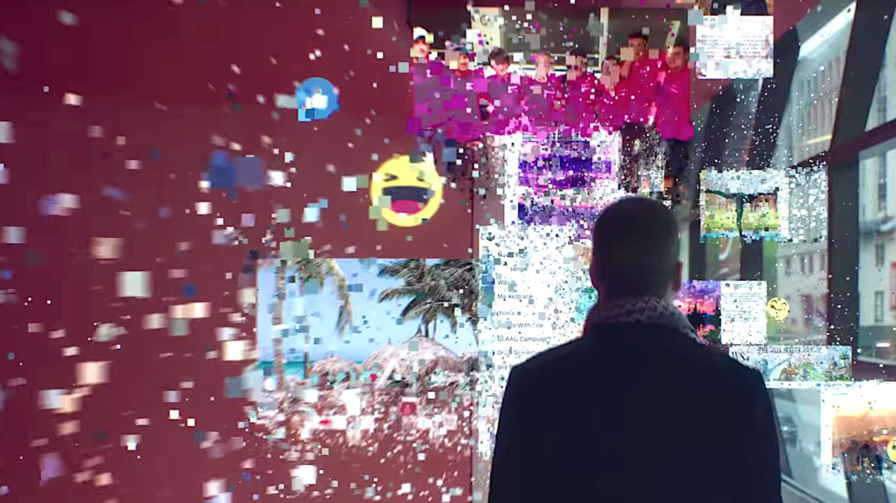

"The Great Hack", dirigido por Karim Amer e Jehane Noujaim e lançado em 2019, é um documentário que investiga o escândalo da Cambridge Analytica e suas consequências globais. O filme oferece uma análise profunda e perturbadora de como os dados pessoais são coletados, manipulados e utilizados para influenciar eleições e a opinião pública, levantando questões críticas sobre privacidade, democracia e ética na era digital.
Menu
Gerais
The Great Hack
"The Great Hack" é um documentário revelador que explora o escândalo da Cambridge Analytica, expondo a manipulação de dados pessoais e suas implicações na democracia moderna.
Por Isaque G. S. Brandão | 11/06/2024
Apresentação
Início
O documentário começa com a introdução ao vasto universo dos dados digitais e como eles se tornaram a mercadoria mais valiosa do mundo moderno. Ele rapidamente se foca no escândalo da Cambridge Analytica, uma empresa de consultoria política que utilizou dados pessoais de milhões de usuários do Facebook sem seu consentimento para criar perfis psicográficos e direcionar campanhas políticas.
Os protagonistas do documentário incluem Brittany Kaiser, ex-diretora de negócios da Cambridge Analytica, David Carroll, um professor universitário que luta para recuperar seus dados, e Carole Cadwalladr, a jornalista investigativa que ajudou a expor o escândalo. A narrativa se desenrola através de suas experiências, oferecendo uma perspectiva multifacetada do impacto da manipulação de dados.
Trailer do documetário
"The Great Hack"
Desenvolvimento
À medida que o documentário avança, somos levados através das complexas operações da Cambridge Analytica, incluindo seu papel nas eleições presidenciais dos Estados Unidos de 2016 e no referendo do Brexit. Brittany Kaiser se torna uma figura central, revelando detalhes internos sobre as táticas da empresa e as estratégias de manipulação de eleitores.
David Carroll, por outro lado, personifica a luta do cidadão comum contra o uso indevido de dados pessoais. Sua batalha legal para obter acesso aos seus próprios dados da Cambridge Analytica destaca as questões de transparência e responsabilidade no uso de informações pessoais. A jornada de Carroll expõe a dificuldade de proteger a privacidade individual em um mundo dominado por corporações que lucram com a exploração de dados.

Fonte: Netflix
Carole Cadwalladr contribui com uma visão crítica e jornalística, mostrando como sua investigação ajudou a desencadear uma série de revelações que abalaram a confiança pública nas plataformas de mídia social e nos processos democráticos. Sua determinação em expor a verdade serve como um lembrete do papel vital do jornalismo na manutenção da transparência e da responsabilidade.
Conclusão
"The Great Hack" é um documentário crucial e revelador que lança luz sobre as profundas implicações da coleta e manipulação de dados na sociedade moderna. A direção de Karim Amer e Jehane Noujaim cria uma narrativa tensa e envolvente que prende o espectador, ao mesmo tempo em que educa sobre os perigos de um mundo onde nossos dados são mercadorias.
O filme é um alerta poderoso sobre como a privacidade e a democracia podem ser comprometidas pela exploração irresponsável e não regulamentada de dados pessoais. As histórias individuais de Brittany Kaiser, David Carroll e Carole Cadwalladr destacam a necessidade urgente de maior proteção de dados e regulamentação para evitar futuros abusos.
"The Great Hack" não é apenas um documentário informativo, mas também um chamado à ação para repensar nosso relacionamento com a tecnologia e os dados. É uma exploração profunda das consequências de um mundo onde a informação é poder e onde a manipulação de dados pode determinar o destino de nações. Este documentário é uma visualização essencial para quem deseja compreender as complexidades da era digital e as batalhas que ainda estão por vir pela privacidade e pela integridade democrática.
Veja também

Análise de "O Dilema das Redes"
"O Dilema das Redes" destaca os perigos das mídias sociais, expondo seus efeitos manipulativos e os riscos à privacidade e à sociedade.

Visão geral de "Lo And Behold: Reveries of the Connected World"
Dirigido por Werner Herzog, o documentário explora o impacto da internet na sociedade, desde suas origens até o futuro, examinando tanto suas promessas quanto seus perigos.

Sobre Citizenfour
Um documentário que segue o encontro entre Edward Snowden, um ex-analista da NSA, e os jornalistas Glenn Greenwald e Laura Poitras, revelando os detalhes sobre os programas de vigilância em massa do governo dos Estados Unidos.